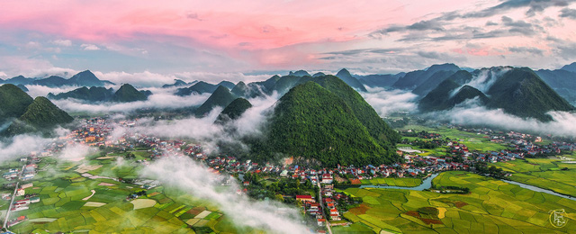
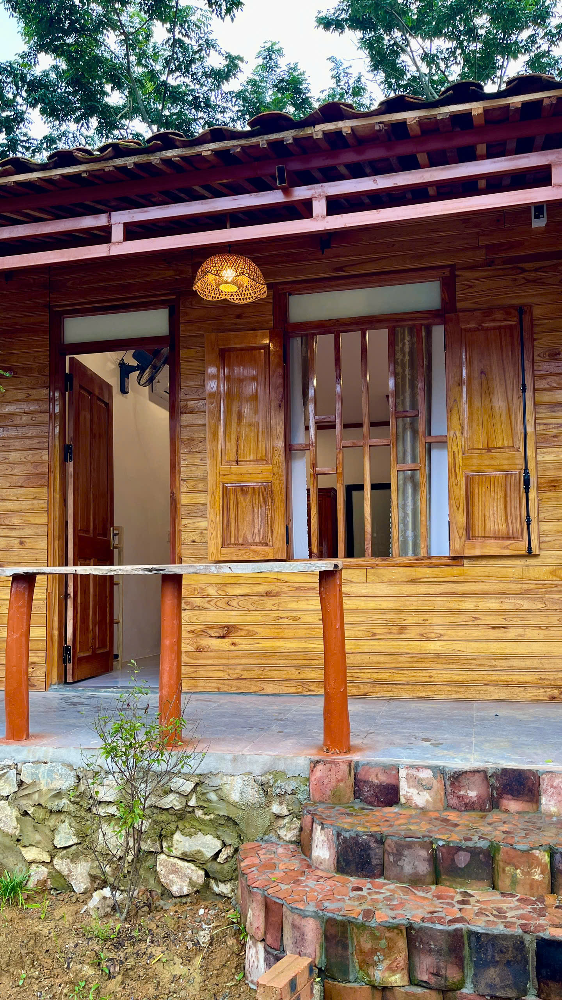

Một vùng đất để nhớ
Giữa núi rừng Đông Bắc, có một vùng đất nơi thiên nhiên, văn hóa và lịch sử cùng hiện diện trong nhịp sống bình dị của người dân bản địa.
Bắc Sơn là vùng đất nằm giữa những dãy núi của tỉnh Lạng Sơn, nổi bật với thung lũng rộng lớn, những cánh đồng xanh trải dài và những dòng suối len qua bản làng. Cảnh sắc nơi đây thay đổi theo từng mùa, khi ruộng đồng khoác lên màu xanh của lúa non, khi chuyển sang sắc vàng trong mùa gặt, tạo nên một bức tranh miền núi vừa hùng vĩ vừa yên bình.
Không chỉ có thiên nhiên, vùng đất này còn mang trong mình một dấu ấn lịch sử đặc biệt. Ngày 27 tháng 9 năm 1940, cuộc Khởi nghĩa Bắc Sơn bùng nổ, trở thành một sự kiện quan trọng trong phong trào đấu tranh cách mạng của nhân dân ta dưới sự lãnh đạo của Đảng. Từ đây hình thành lực lượng du kích Bắc Sơn và căn cứ địa Bắc Sơn – Võ Nhai, để lại dấu ấn sâu đậm trong lịch sử cách mạng Việt Nam.
Ngày nay, Bắc Sơn đang dần trở thành điểm đến được nhiều du khách tìm về để khám phá thiên nhiên, văn hóa bản địa và những câu chuyện lịch sử. Du lịch cộng đồng phát triển giúp những giá trị truyền thống tiếp tục được gìn giữ trong chính đời sống của người dân địa phương.

Trong thung lũng Bắc Sơn là những bản làng của đồng bào Tày, nơi những ngôi nhà sàn truyền thống vẫn được gìn giữ qua nhiều thế hệ. Quỳnh Sơn là một trong những nơi tiêu biểu cho vẻ đẹp ấy. Những nếp nhà sàn nằm giữa núi rừng, những con đường nhỏ chạy qua bản và cuộc sống cộng đồng bình dị tạo nên một không gian rất riêng của vùng Đông Bắc.
Đến đây, du khách có thể cảm nhận văn hóa Tày qua những làn điệu Then, Sli, thưởng thức các món ăn địa phương và trải nghiệm cuộc sống trong những ngôi nhà sàn truyền thống. Điều đặc biệt của du lịch cộng đồng nơi đây là du khách không chỉ đến để ngắm cảnh, mà còn được sống chậm lại và hòa mình vào đời sống của người dân bản địa.
Ngày 17 tháng 10 năm 2025, Làng du lịch cộng đồng Quỳnh Sơn được Tổ chức Du lịch Liên Hợp Quốc (UN Tourism) vinh danh trong danh sách “Best Tourism Villages 2025”, một trong những làng du lịch tiêu biểu trên thế giới. Sự ghi nhận này là niềm tự hào của người dân địa phương, đồng thời khẳng định những giá trị về cảnh quan, văn hóa, cộng đồng và định hướng phát triển du lịch bền vững của Quỳnh Sơn.
Chính những điều bình dị ấy làm nên sức hấp dẫn của Quỳnh Sơn – một nơi không cần quá nhiều những công trình hiện đại, bởi bản sắc văn hóa, cảnh quan và cuộc sống cộng đồng đã trở thành nét đẹp riêng của vùng đất này.

Trong hành trình khám phá vùng đất này, một nơi nghỉ nhỏ giữa bản làng có thể trở thành điểm dừng chân để du khách cảm nhận rõ hơn nhịp sống địa phương.
Dương Gia Đạt Homestay nằm tại Làng Quỳnh Sơn, mang đến một không gian nghỉ ngơi gần gũi, yên bình và thân thiện. Tại đây, du khách có thể tạm rời xa nhịp sống vội vã thường ngày, nghỉ ngơi giữa không gian núi rừng và cảm nhận cuộc sống giản dị của bản làng.
Từ nơi lưu trú, du khách có thể bắt đầu hành trình khám phá Quỳnh Sơn, tìm hiểu văn hóa Tày, thưởng thức ẩm thực địa phương và tiếp tục khám phá cảnh sắc, lịch sử của vùng Bắc Sơn.
Với chúng tôi, một chuyến đi đáng nhớ không chỉ nằm ở nơi bạn đã đến, mà còn ở những khoảnh khắc bình dị bạn đã trải qua trên hành trình ấy.
